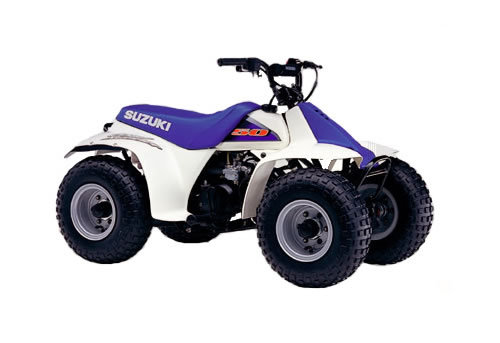
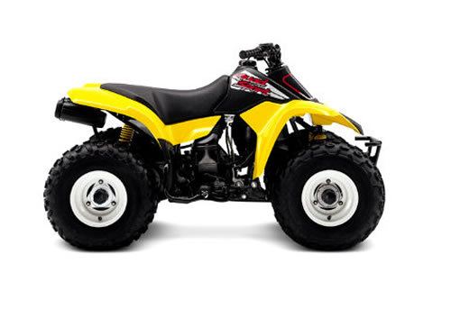

| Suzuki LT50 service manual repair 1984-2001 LT-50 | |
 |
Instant download of the factory repair manual for the 1984-2001 Suzuki LT50 two-stroke youth atv without front suspension. 138 pages. |
 |
| Suzuki LT-A50 service manual repair 2000-2005 LTA50 LT50 | |
| Instant download of the factory repair manual for the 2000-2005 Suzuki LT-A50 two-stroke youth atv with front suspension. 130 pages. | |
|
| Suzuki LT-Z50 service manual repair 2006-2009 LTZ50 | |
| Instant download of the factory repair manual for the 2006-2009 Suzuki LT-Z50 youth atv. 209 pages. | |
|
| Suzuki LT80 service manual repair 1987-2006 LT 80 | |
 |
Instant download of the factory repair manual for the 1987-2006 Suzuki LT80 two-stroke youth atv. 220 pages. |
|
| Suzuki LT-Z90 service manual repair 2007-2014 LTZ90 | |
 |
Instant download of the factory repair manual for the 2007-2014 Suzuki LT-Z90 youth atv. Can also be used for newer models. This model was not made from 2010-2013. 257 pages. |
|
| Suzuki LT125 service manual repair 1983-1987 LT 125 | |
| Instant download of the factory repair manual for the 1983-1987 Suzuki LT125 QuadRunner atv. 261 pages. | |
|